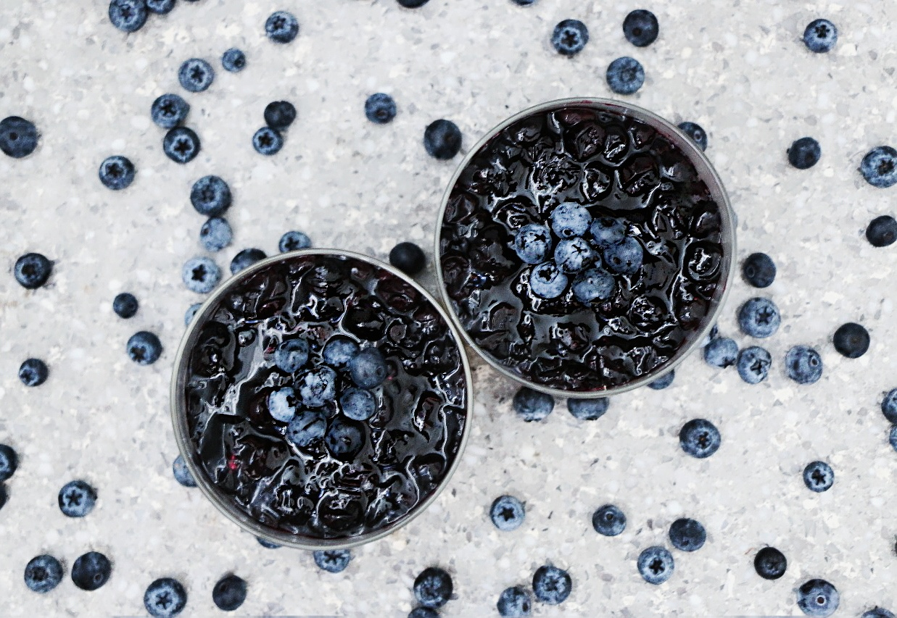
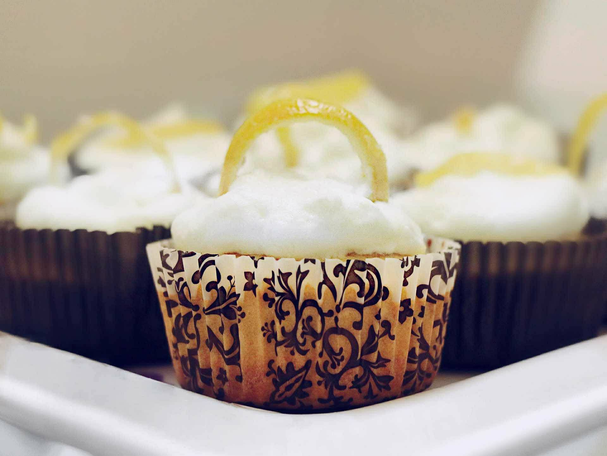

Makes 4-5 servings
Graham Cracker Crust
- 90 g Honey Graham Crackers
- 2 tsp Brown Sugar
- 2 tbsp Melted Butter
Cheesecake Filling
- 226 g(1 package/8 oz) Room Temperature Cream Cheese
- 500 ml (2 cups) Whipped Cream (more = lighter cheesecake)
- 5-6 tbsp Caster Sugar
Blueberry Compote
- 1.5 cups Blueberries (you can use any fruit you prefer)
- 1 tbsp Caster Sugar (add more sugar depending on desired sweetness)
- 2 tsp Lemon Juice
- 2 tbsp Water (add more water for a saucier texture)
Method
- Crush the Graham Crackers until you have fine crumbs. The finer the crumbs, the easier it will be to set it. and mix in the Brown Sugar
- Then, add the melted butter little by litle to the crumb and sugar mixture and combine till you get the consistency of damp sand
- Press down the Graham Cracker Mixture into the bottom of your dish and freeze for 10 minutes
- Mix the Cream Cheese with the Caster Sugar till you reach desired sweetness
- Fold in the Whipped Cream little by little till th mixture is smooth
- Pour the Cream Cheese mixture over the Graham Cracker crust and refrigerate
- Over medium heat, combine the blueberries, sugar and water and mix till sugar is dissolved
- Add the lemon juice and stir till the mixture thickens to desired consistency
- Remove the mixture from heat and let it cool
- Pour the Blueberry Compote over the cheesecake and serve
- Enjoy!

Makes 16 cupcakes
Lemon Curd
- 5 Egg Yolks
- 1 Eggs
- 1/2 cup Sugar
- Lemon Juice from about 2 Lemons
- Lemon Zest from 2 Lemons)
- 1/8 cup Unsalted Butter
Candied Lemon Peels
- 100g Granulated Sugar
- 1/8 cup Water
- Thin Peels from 1.5 – 2 Lemons
Lemon Meringue Topping
- Lemon and Sugar Mixture from Candied Peels Recipe above
- alternatively combine a teaspoon of lemon zest, 100g of sugar, and 1/8 cup of water in a saucepot and bing to a boil (200°F)
- 2 Egg Whites
Lemon Cupcakes
- 1 1/2 Cups All-purpose Flour
- 1/2 tsp Salt
- 1 tsp Baking Powder
- 1 tbsp Lemon Zest (from about 1 large lemon)
- 1 stick Unsalted Butter, melted
- 1 1/4 cups Sugar
- 3 large Eggs
- 1/2 cup Whole Milk
- Fresh Lemon Jice from about 1 large lemon
- 1.5 tsp vanilla extract
Method
- Lemon Curd
- Fill half a saucepot with water and bring to a boil.
- Whisk zest and sugar together in a stainless steel bowl.
- Add egg yolks and whole egg and whisk till smooth.
- Finally, whisk in the lemon juice.
- Place the bowl on the saucepot and continue whisking for about 20 minutes till the egg mixture forms a thick custard.
- Take the bowl off the heat and mix in butter with a wooden spoon.
- Let the custard cool and strain through a sieve for a really smooth lemon curd!
- Candied Lemon Peels
- Combine Lemon Peels, Sugar and Water in a Saucepot over medium heat and let it come to a boil (around 190°F).
- Remove peels from sugar mixture and place on a sheet of parchment paper.
- Let the lemon peels cool and harden to prevent sticking to everything it touches.
- Lemon Meringue Topping
- Whip egg whites on Medium High till fluffy and white.
- Add sugar mixture that you used for the lemon peels once it reaches 200°F in a slow but steady stream while continuing to whip.
- Continue whipping till a stiff and glossy meringue forms and you can turn the bowl upside down without anything falling out.
- Lemon Cupcakes
- Preheat oven to 350 degrees and line cupcake tin with liners.
- Whisk flour, baking powder, salt, and zest in a medium bowl.
- Add sugar, melted butter and lemon juice into a large bowl and whisk till well combined.
- Add eggs one at a time, beating after each addition.
- Beat in vanilla extract and lemon juice.
- Add 1/3 of the flour mixture and mix till combined.
- Add ½ of the milk and mix well.
- Repeat with another 1/3 of the flour and the remaining half of the milk.
- Finally, add the remaining 1/3 of the flour mixture and mix well till all ingredients are fully combined.
- Fill cupcake liners about 2/3 full with the batter and bake for about 18 minutes.
- Check if cupcakes are fully cooked by inserting a toothpick (it should come out clean).
- Let the cupcakes cool.
- Assembly
- Use a small icing nozzle or small knife to hollow out a small well in the middle of the cupcake.
- Fill the well with the lemon curd and top the cupcake with the meringue topping.
- Add one of your candied lemon peels on top and you’ve got yourself a delicious quadruple lemon cupcake!
